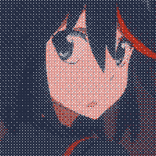

このは私のサイト。ようこそ！ここが色々なものがあります、でも何が投稿を置くはわかりません、なので置くなものはゴミ。あなたは恐らく見たいない。
ようこそ私のサイト

文法や単語
もし文法や単語にエラーがあれば、教えてください！私の日本語はまだとても悪い、でも学ぶことに頑張ります！連絡先は左側にあります。
長めの投稿
長めの投稿を書き始めました。ここで読む。
最近ブログ投稿
個人サイト 2024年02月07日 (水)
個人サイトの作るや閲覧はどちらもとても楽しい。では、なぜ個人サイトは珍しい何ですか？皆さんはSNSが大嫌い、でも皆さんSNSを使う。これはなぜでしょうか？なぜ誰も個人サイトを作らないのですか？それぞれのサイトは異なり、面白い。 なぜこれを見捨てるのですか？